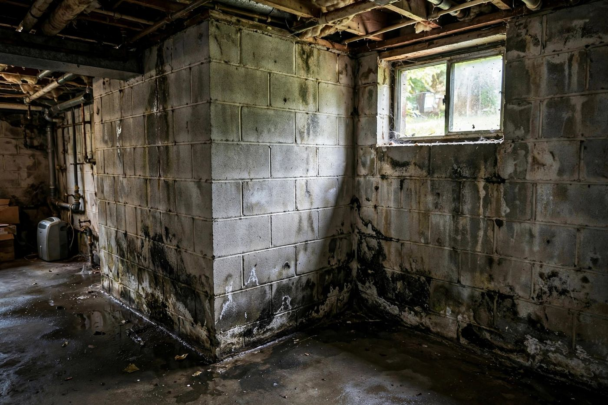

Basement Mold Removal in Boise, ID
Basements show moisture problems in specific ways. A white crust, a smell that comes and goes, or a stain at a certain height each point to a different cause. Match what you see to the table below before anyone starts tearing out drywall.
- Foundation seepage
- Irrigation groundwater
- Finished basements
- Window wells

Match the sign to the likely source
These are the patterns we see most in Treasure Valley basements. A sign can have more than one cause, so treat this as a starting point.
| What you notice | Most likely cause | When it shows up | Concern |
|---|---|---|---|
| White, chalky crust on concrete walls | Efflorescence: minerals left behind as groundwater moves through the concrete and evaporates. Not mold, but proof water is coming through. | Summer into fall | Moderate |
| Musty smell that’s worse July–September | Irrigation-season groundwater raising humidity behind finished walls or under flooring. | Irrigation season | Moderate |
| Damp carpet along one wall | Grading or a downspout sending water toward the foundation, or a window well filling up. | After storms, snowmelt or sprinklers | High |
| Water line or stain at a consistent height | A past flood or a sump that failed once, so check behind the drywall for old growth. | Any time | High |
| Black spotting low on drywall, behind furniture | Cold foundation wall plus trapped air. Condensation at the bottom of finished walls. | Winter | Moderate |
| Water at the floor-wall joint | Hydrostatic pressure pushing water through the cold joint between slab and wall. | High groundwater | High |
| Rusty water heater base, damp around it | A slowly leaking tank or relief valve line. | Any time | High |
| Condensation on cold water pipes | Humid basement air meeting cold supply lines. Usually manageable with a dehumidifier and pipe insulation. | Summer | Low |
Recognize more than one of those signs?Several symptoms together usually mean a water entry point worth finding before you rebuild anything.
Call (321) 985-3339When the problem is behind drywall
Most of the basement mold calls in the Boise area involve finished spaces, not bare concrete.
When a basement is finished, the foundation wall is usually covered by framing, fiberglass insulation and drywall. If water comes through the concrete, it soaks the bottom plate and the insulation, and none of it shows from the room side until the baseboard stains or the smell gets strong.
We usually take moisture readings along the bottom of every exterior wall, then cut small inspection holes or remove baseboard to look. Remediation typically means removing the lower two to four feet of drywall and insulation along the affected walls, cleaning and drying the framing, and fixing the water entry before rebuilding.
Rebuilds often use materials that tolerate occasional moisture better: rigid foam against the concrete, pressure-treated bottom plates, and a small gap at the floor.
Most basement water starts outside
Downspouts
Every downspout should discharge at least several feet from the foundation. A disconnected extension sends a roof’s worth of water straight to the wall.
Sprinkler heads
A head that sprays the foundation, or a broken line in a bed against the house, can soak the soil every night all summer.
Window wells
Wells without covers fill with leaves and snow. A clogged drain at the bottom turns them into a funnel.
Common questions
Is the white powder on my basement wall mold?
Usually not. White, crystalline, chalky deposits on concrete are efflorescence, mineral salts left by evaporating water. It isn’t harmful itself, but it shows that moisture is moving through the wall.
Why does my basement only smell in summer?
In much of the Treasure Valley, irrigation raises the groundwater table from late spring through early fall. Basements and crawlspaces get damper as it rises, then dry out after irrigation shuts off.
Do I need to waterproof my basement?
Not always. Many basement moisture problems are solved outside with grading, downspouts and sprinkler adjustments. Interior drainage or exterior waterproofing comes up when water is entering under pressure.
Can I keep using my basement during remediation?
Parts of it, often. The affected area is contained and under negative air, and the rest of the basement can stay in use. Ask us for our plan.